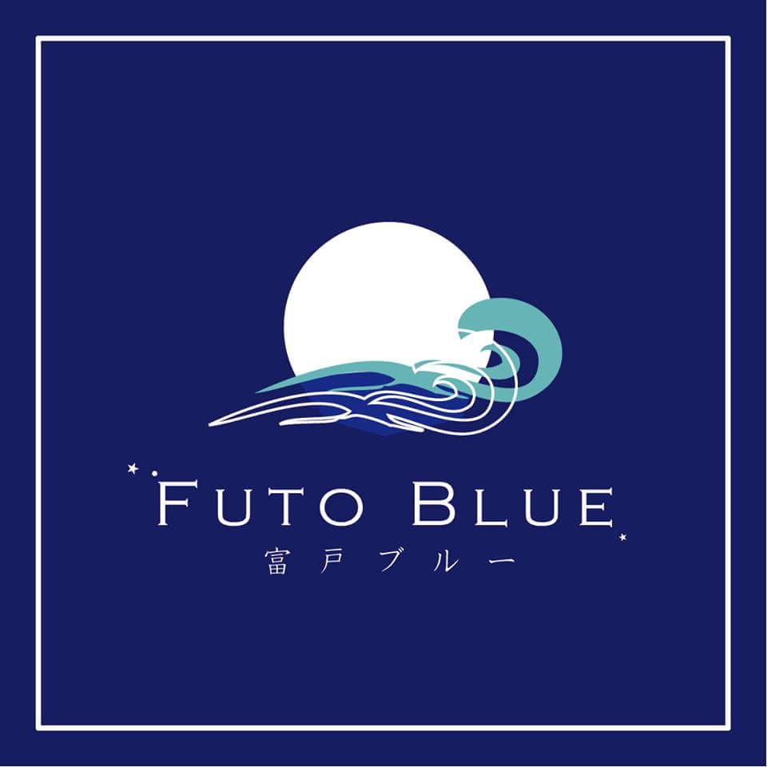
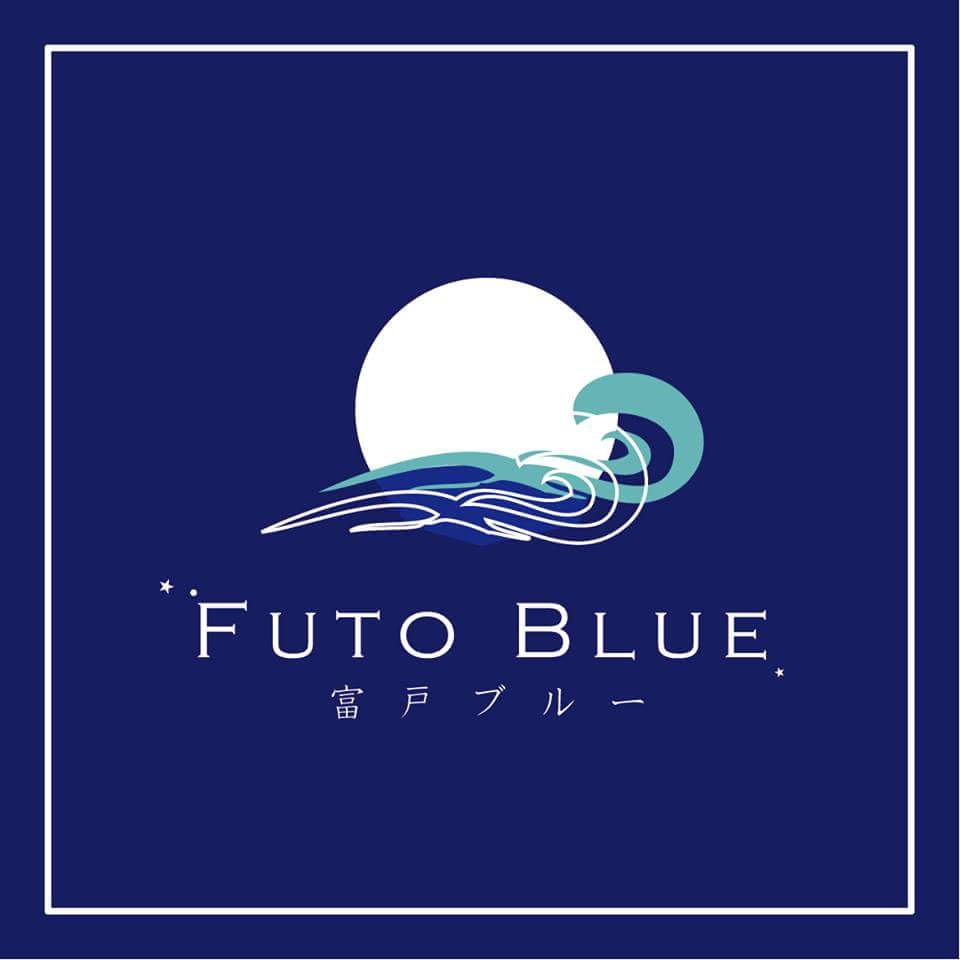

富戸について
静岡県東伊東にある富戸という地域は、海が綺麗であることが有名です。都心からのアクセスもよく、伊豆半島屈指のダイビングスポットでもあります。
海が綺麗なことから魚もよく見られます。
この富戸の地域活性化を図るために活動してくださっている人たちが「NPO法人 笑顔のきずな 」さんたちです。地元で収穫される農産物と富戸漁港で水揚げされる地魚を組み合わせ、オール地産地消のストリートフードを開発し、販売しています。 中でも、サバとアイルランドルビーを使用した「ライスコロッケ」と「パスタ」は、人気でした。また、海に関するイベント、オリーブ公園、ハーブ農園を営み、富戸でしか味わえない味、 体験、商品などを「富戸ブルー」としてブランディングするなど、多岐にわたり活動しています。
富戸はシュノーケリングも人気で、そこでも多くの魚を見ることができます。市域の約半分が富士箱根伊豆国立公園地域にあたることもあり、 商業、サービス業をはじめ、伊東、川奈、富戸（ふと）の漁港を中心とした水産業においても、観光との結びつきが強いです。
 笑顔のきずなサイト画像をクリック！
この富戸の地域活性化を図るために活動してくださっている人たちが「NPO法人 笑顔のきずな 」さんたちです。地元で収穫される農産物と富戸漁港で水揚げされる地魚を組み合わせ、オール地産地消のストリートフードを開発し、販売しています。 中でも、サバとアイルランドルビーを使用した「ライスコロッケ」と「パスタ」は、人気でした。また、海に関するイベント、オリーブ公園、ハーブ農園を営み、富戸でしか味わえない味、 体験、商品などを「富戸ブルー」としてブランディングするなど、多岐にわたり活動しています。
富戸はシュノーケリングも人気で、そこでも多くの魚を見ることができます。市域の約半分が富士箱根伊豆国立公園地域にあたることもあり、 商業、サービス業をはじめ、伊東、川奈、富戸（ふと）の漁港を中心とした水産業においても、観光との結びつきが強いです。
 笑顔のきずなサイト画像をクリック！